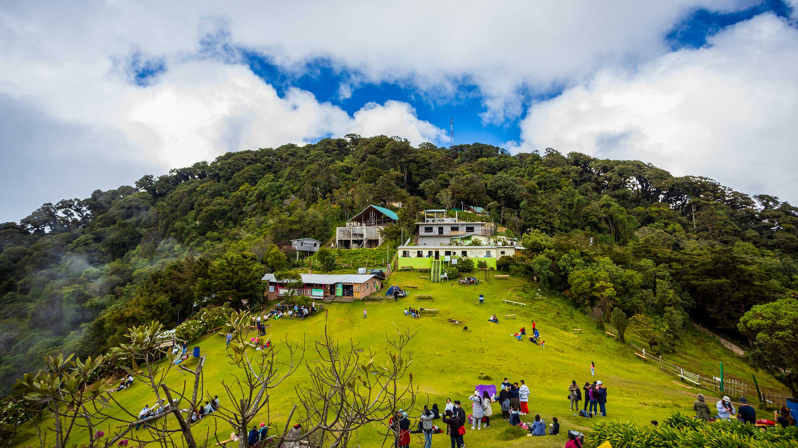
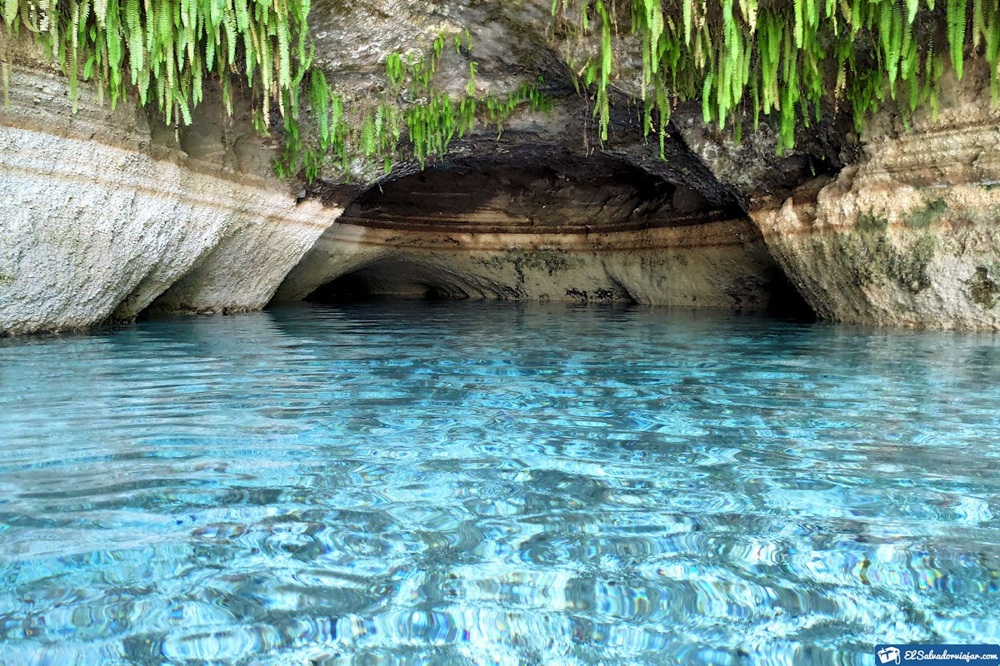

Kukulcán Tours El Salvador
Home
Sitios Turisticos
Cerro el Pital
Ruta de Las Flores
Lago de Coatepeque
Conchagua
Moncagua
Viajes del mes
Cerro el Pital

Ruta de Las Flores
Lago de Coatepeque
Conchagua
Moncagua

Reservar mi proximo viaje
Nombre
Número de Contacto
Enviar información